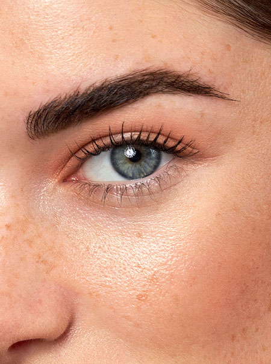

Lifting de Pestañas
Con el tratamiento de lifting conseguimos curvar nuestras pestañas naturales desde la raíz, realzando la belleza de la mirada. Se realiza con unos moldes de silicona que se ajustan a la línea de las pestañas.
Es perfecto para aquellas personas que aún no se atreven con las extensiones de pestañas.
El resultado es que las pestañas se estiran hacia arriba, dando lugar a una longitud extraordinaria. En el mismo tratamiento aplicamos también tinte, creando un efecto de espesor y longitud que intensifica la mirada.
El tiempo de realización del tratamiento es, aproximadamente, de una hora y su duración es de 4-5 semanas.
